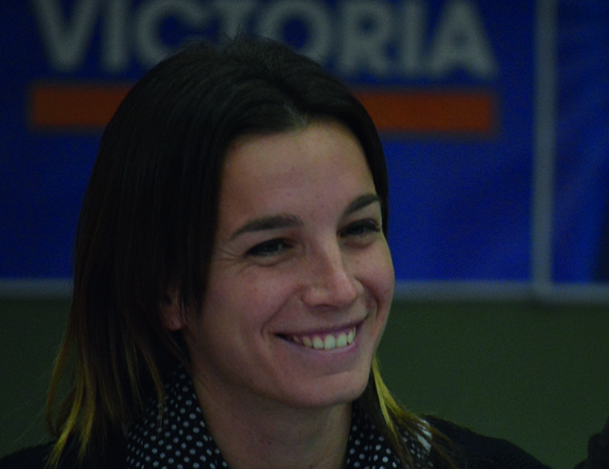

Lucila de Ponti
“Nuestro rol es consolidar este proyecto revolucionario.”

Lucila es politóloga, tiene 29 años, y desde hace 11 milita en el Movimiento Evita.
Es dirigente de la Confederación de Trabajadores de la Economía Popular, y actualmente es precandidata a diputada nacional por Santa Fe por el Frente para la Victoria (FPV).
-¿Cuándo empezaste a militar?
-Me sume al Movimiento Evita cuando empecé la universidad, en el 2004, pero mi primera experiencia de participación fue durante las inundaciones en Santa Fe, en el año 2003. Una parte importante de la ciudad quedó tapada por el agua, y como con mis amigas, vivíamos cerca de la Universidad Tecnológica, que fue un centro de evacuados, todos los días ibamos a colaborar haciendo la comida, cuidando a los pibitos, y distintas cosas. Esa experiencia me hizo dar cuenta que con la organización colectiva se pueden atravesar hasta las situaciones más dolorosas.
-¿Qué rol tiene la juventud hoy por hoy?
-La juventud tiene sus improntas, por la energía y el sentimiento que tiene que ver con que es una etapa especial en la vida de las personas. En la política, más allá de si es es joven o no, nosotros siempre priorizamos la militancia por un proyecto que tenga que ver con la defensa de los sectores populares. Siempre hubo jóvenes en política, pero en esta etapa los pibes podemos ocupar espacios institucionales que antes a lo mejor nos estaban vedados, y no sólo pasa en el kirchnerismo, pasa en todos los sectores. Esto tiene que ver con la etapa política que se inicia en 2003, alrededor de la figura de Néstor Kirchner. Nuestro rol en la nueva etapa que se abre, apunta a consolidar ese proyecto revolucionario, que se da por una vía democrática y que pone al pueblo en la centralidad de la escena, para construir una patria con verdadera justicia social.
-¿Cuáles son los proyectos que vas a impulsar?
-Desde la CTEP, trabajamos para avanzar con las deudas principales de este proyecto, lo que nosotros llamamos “lo que falta”, y que tiene mucho que ver con la posibilidad de que los pibes puedan materializar una vida plena. Nuestra idea es trabajar respecto a esto. Como Movimiento Evita proponemos la creación de un Ministerio de la Economía Popular en el marco del gobierno de Daniel Scioli, y desde la Cámara queremos acompañar con leyes laborales que legislen la actividad, porque para nosotros es fundamental que los campesinos, los vendedores ambulantes, los recicladores urbanos, los trapitos, y muchos otros trabajadores que hoy no son reconocidos como tales, puedan tener un sindicato, puedan tener obra social, seguros, vacaciones, y los demás derechos que tienen los trabajadores “en blanco”.
-¿Qué significa ser pibe o piba en Santa Fe?
-Por un lado hay algo muy lindo, que tiene que ver con la cultura, el fútbol, la música. Y por otro, somos una de las provincias con mayor desempleo joven, y muchas veces la única relación de los jóvenes con el Estado es en su fase represiva, es decir con la Policía y la Justicia. Hay una estigmatización de los pibes, en vez de investigar delitos y situaciones que generan inseguridad, se persigue a los jóvenes por simplemente salir a la calle. Esto perjudica principalmente a los jóvenes de los sectores populares, porque en ellos se concentra la represión, pero cualquier pibe santafesino de cualquier sector social te puede contar una historia de maltrato policial vivido en carne propia.